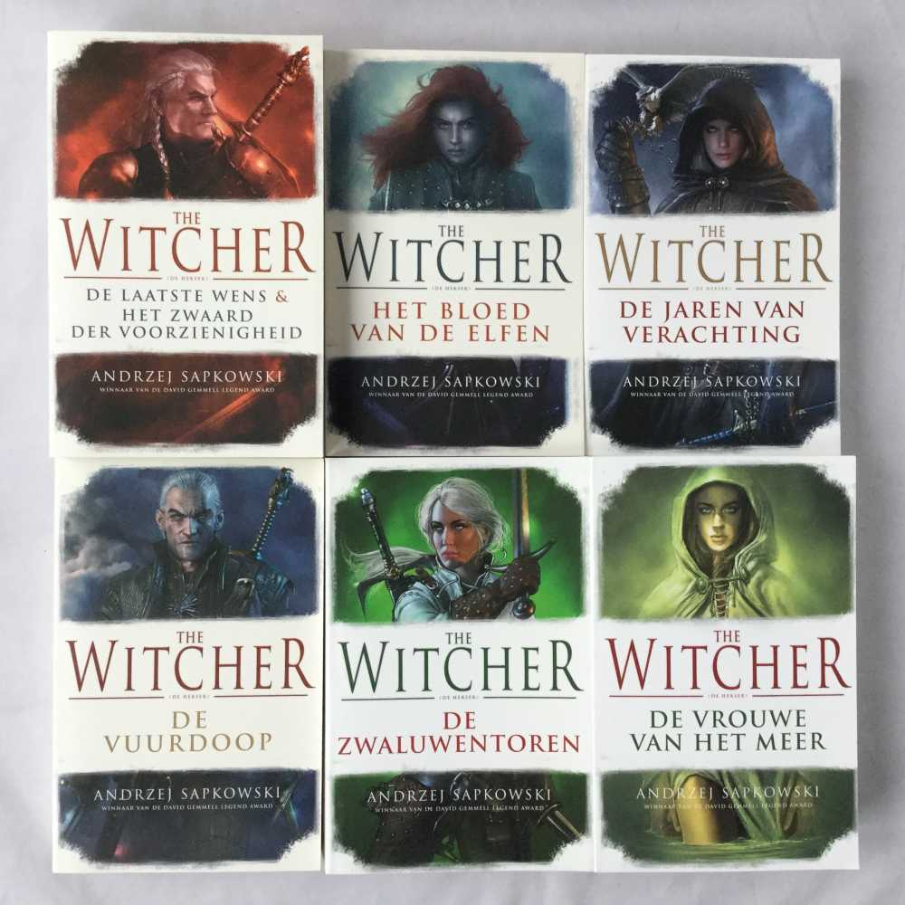
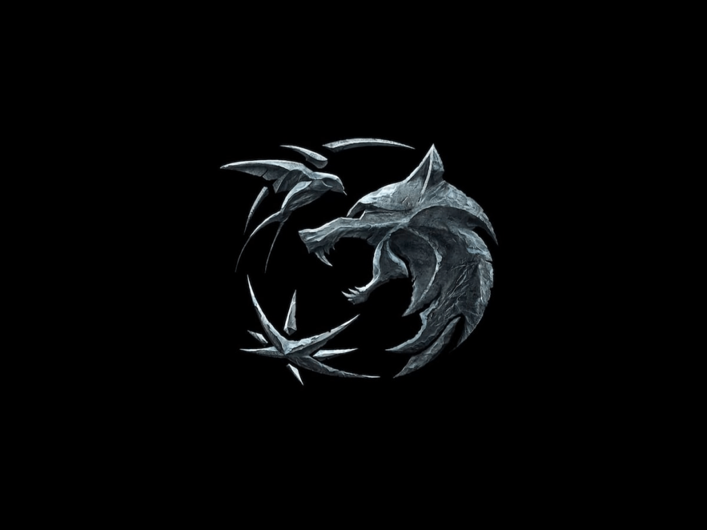

De pool Andrzej Sapkowski is de schrijver van de Witcher boeken. Hij begon zijn carrière door een kort verhaal genaamde de Witcher naar een pools tijdschrift te sturen. Hierna werd het alleen maar groter. Er zijn twee korte verhalen en 5 romans verschenen over de Witcher. De themas die het meeste voorkomen zijn oorlog en moreel onmogelijke beslissingen. Ik zou de boeken alleen aanraden als je veel leest, want ze zijn erg moeilijk geschreven en kunnen verwarrend zijn als je niet op kleine details let.


Ook zijn er 3 video games van gemaakt door CD project red. Waarvan de derde wordt gezien als één van de beste spellen ooit gemaakt. De games spelen zich af na de boeken en beantwoorden vragen die onbeantwoord bleven in de boeken. The Witcher 3 is uitgekomen in 2015 en is nog steeds relevant. Het behoudt veel themas van de boeken, maar maakt ook bepaalde veranderingen aan karakters. Zo is Triss merigold veel relevanter en heeft Zoltan een compleet ander moreel beeld.
Netflix’ Witcher heeft tot nu toe alleen de eerste 2 boeken verfilmd. In seizoen 2 begint het verhaal pas echt, omdat er dan begonnen wordt aan de eerste Roman. Ik ben benieuwd hoe ze het tweede seizoen gaan doen, want de eerste twee boeken zaten vol actie alleen in de Romans zijn er vaker lange dialogen die over politiek gaan en die iedere 5 bladzijden van onderwerp veranderen, dit zorgt voor een beter beeld van de wereld en wat er in die wereld gaande is, maar kan in de serie een beetje saai overkomen.
